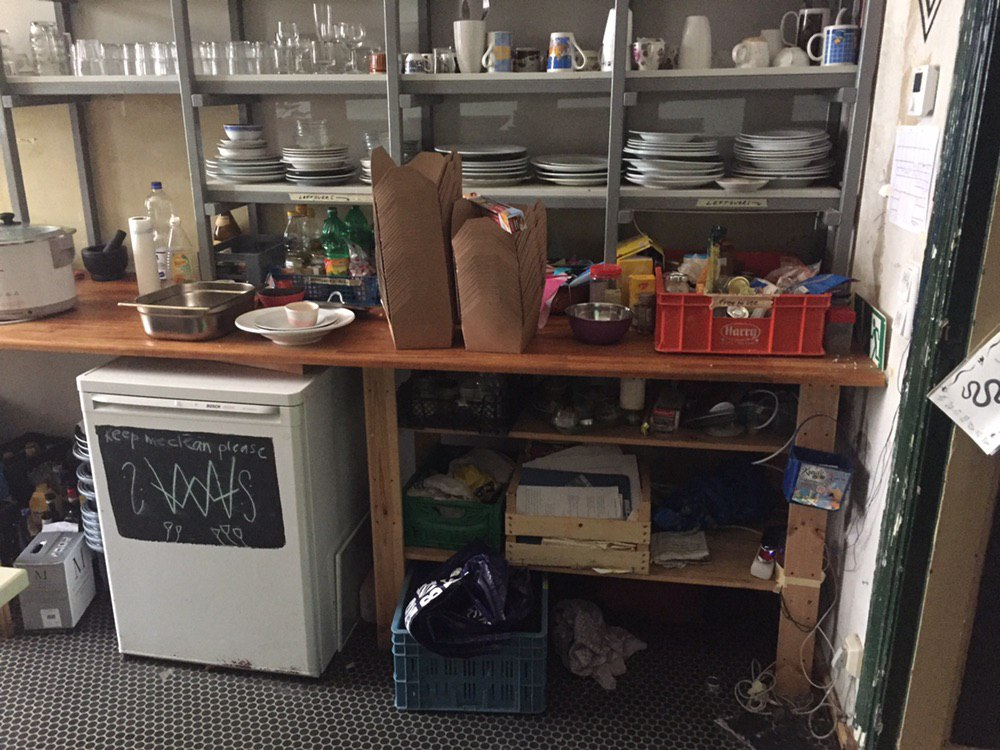

what is resilience?
what does a resilient community look like and what types of structures do they build?
this web page is being served from a raspberry pi on a shelf inside of sari-sari
this raspberry pi also runs a scuttlebutt pub
(here is a more detailed explanation if you're curious)
something beautiful about scuttlebutt is the pub just connects us and is easily substitutable for another
(a form of resilience)
send me a message any way you can reach me
and I'll send you an invite which you can use to connect to this pub
in the future you can also ask other people running pubs for invites so you don't depend on this pub for connectivity either
it's kind of like a resilient network for people interested in resilience,
farming, fabrication, community organizing,
permaculture, solarpower, sailing, mycology
i imagine wires connecting us directly that weave between and around the malls we often meet in
even if there are no accessible pubs, scuttlebutt can work via wifi, bluetooth and sneakernet,
using whatever connections are available
i could say more about where this longing comes from but it feels not needed
{kind=link}